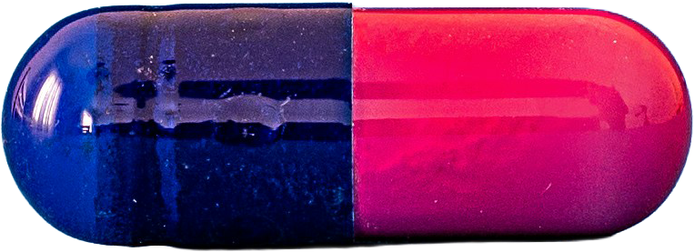

1950년대에 복합 치료제가 개발되면서 결핵은 이미 완치 가능한 질병이 되었죠. 하지만 이 놀라운 의학적 진보는 전세계의 모든 이들에게 평등하게 도달하지 못했습니다. 과거의 질병뿐이라는 잘못된 오해들 속에서 결핵은 여전히 소리 없이 인류를 위협하고 있습니다.
세포벽이 두껍고 증식 속도가 느려 완치를 위해서는 장기간 여러 약을 동시에 복용해야 하죠. 치료 과정이 길고 복잡하다 보니 투약을 중단하는 경우가 많고 치료가 훨씬 까다로운 내성 결핵균의 출현으로 이어집니다.
수십 년 전에 완성해 사용되던 치료제는 정작 치료가 시급한 저개발 국가의 빈곤층에게는 제대로 공급되지 못했습니다. 보건 의료 자원이 부족한 지역에선 치료의 기회조차 얻지 못한 채 고통스러운 죽음을 맞이하죠.
부유한 국가에서 결핵이 사라지자 기업들은 더 이상 신약 개발에 투자하지 않았습니다. 1965년부터 2012년까지 수십 년간 결핵 신약 연구가 완전히 멈췄던 이유는 가난한 이의 질병이 시장에서 돈이 되지 않았기 때문입니다.
글로벌 제약회사들이 지식재산권을 무기로 저렴한 복제약의 대량 생산을 차단하고 가격을 높게 유지하며 빈곤국의 약물 접근성은 치명적으로 저하되었죠. 인류를 구할 의학 기술이 상업적 이익의 도구로 전락한 셈입니다.